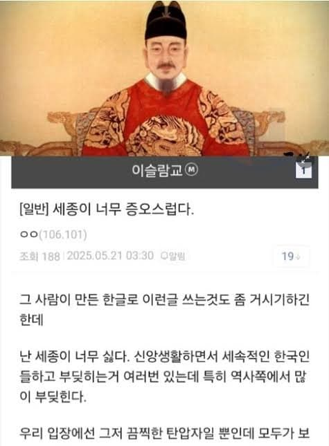

폭동이 일어날 틈도 안줌ㅋㅋ
다꺼져라 ㅋㅋ

폭동이 일어날 틈도 안줌ㅋㅋ
다꺼져라 ㅋㅋ
ㅋㅋㅋㅋㅋㅋ
(대충 훈민정음 발명으로 진격의거인을 원어로보지못하게됐다는글)
내용이빠졌네
내용은 중요하지않으니까 ㅋㅋㅋㅋㅋ
갤이름보셈
회회교도들 아내가 없어서 중매서주려는 정책 펼치는 예조와 그를 결재하는 세종의 이야기는 중요하지 않고, 그냥 무슬림 슬레이어로 만들어버리는게 중요함.
갓종대왕님이 탄압할 정도면 좆슬람이 잘못한거 맞다
역대 한반도 지도자 GOAT
저때나 지금이나 국민이 되려는 생각이 없잖아 ㅋㅋㅋ
쟤네는 왜 자꾸 남의 나라에 어쩌구저쩌구 하는지 모르겠음
국적이 한국이라고? 근데 한국인이 될 생각 없고 한국에 빨대만 꼽으려고 하잖아 ㅋ
쟤들은 걍 자기모순이 너무 심해
이슬람 율법은 차별과 박해를 강요하는데
지들 종교 권리를 보장해달라고 염병함
태조면 느그 다 죽였어
일잘러 세종대왕이 탄압했다면 타당한 이유가 있었을 것이다.
ㅋㅋ지까짓게 증오해봣자 킹갓대세종을
『세종실록』 36권, 세종 9년(1427년) 4월 4일
예조에서 계하기를,
"회회교도(回回敎徒)는 의관(衣冠)이 보통과 달라서, 사람들이 모두 보고 우리 백성이 아니라 하여 더불어 혼인하기를 부끄러워합니다. 이미 우리 나라 사람인 바에는 마땅히 우리 나라 의관을 좇아 별다르게 하지 않는다면 자연히 혼인하게 될 것입니다. 또 대조회(大朝會) 때 회회도(回回徒)의 기도(祈禱)하는 의식(儀式)도 폐지함이 마땅합니다."
하니, 모두 그대로 따랐다.
원문 발췌
禮曹啓
回回之徒, 衣冠殊異, 人皆視之, 以爲非我族類, 羞與爲婚。
旣爲我國人民, 宜從我國衣冠, 不爲別異, 則自然爲婚矣。
且回回大朝會祝頌之禮, 亦宜停罷。皆從之。
그렇다고 세종이 무슬림들을 박대한 것도 아님. 이미 회회인들은 원나라 부마국이 된 고려로 정착하기 시작해서 태종 대부터는 집도 받고 삶의 터전도 얻었고, 나름 과학기술 도입 시 중추적인 역할 담당하기도 했으니까. 장씨 혹은 마씨 성을 받기도 하고, 잡과나 무과에 종사하면서 그럭저럭 잘 어울렸음. 상소의 핵심 내용도 '쟤네 다 조지자' 가 아니라 '회회인들이 아내를 얻지 못해서 걱정인데 이렇게하면 어떻습니까' 를 그대로 적용한 셈인거. 등따숩고 밥도주고 사회적으로 인정도 해주고 아내까지 국가가 나서서 중매해주는데 뭣하러 회회교를 유지하겠음? 사실 중앙아시아 출신 회회인들은 '그 당시에도' 나이롱 취급받았었고, 좀 유연하긴 했었지.
이슬람마갤은 원래 무슬림 코스프레하는 분탕들 많아서 저새끼는 걍 역사도 모르고 지껄이는거.
애초에 이미 당시 회회인들이 거의 동화되다시피하시고 했고 성리학도 받아들여서 뭐
회회인 문제로 예조가 내놓은게 뭐 '저 이방인들이 국가질서를 어지럽히는 존재들입니다!' 같은 사회갈등이나 그런 것도 아니고 '얘네 아내가 없어서 걱정임' 하는 게 좀 재미있음 ㅋㅋㅋ 지극히 유교행정다운 결혼 장려책으로 갈등을 사전에 지워버린 셈이라 지금 봐도 묘하게 유쾌한 대목임.
그리고 솔직히 세종의 종교 통제는 무속이랑 불교가 큰 대상 아니었나?
ㅇㅇㅇ 당대 사대부들이 가장 고심했던 건 민간신앙(무속)과 불교(적폐청산)를 어떻게 때려잡을것인가가 주류였지, 한줌 회회교도들은 그냥 금전과 의식주 해결해주고 아내를 안겨주면 금방 해결될 사소한 문제긴 했지.
‘우리입장에선 그저 끔찍한 탄압자일 뿐인데’ ㅋㅋㅋㅋ 마인드 씨발 ㅋㅋㅋ 제발 중동으로 꺼져 신앙생활 방해받기 싫으면
왜 굳이굳이 여기오는거야 지들나라에서 편하게하면되는걸
한국어 말고는 아무것도 못하는 새끼가
신앙생활 ㅇㅈㄹ
ㅋㅋ 컨셉질로 써놓은거 뒷부분 다 잘라먹고 조적해서 혐오스택 쌓아버리기~
나도 이것만보고 퍼왔어ㅠ
'대왕'의 업적은 오백 년 이상을 간다.
그럼 니네나라로 꺼지라고